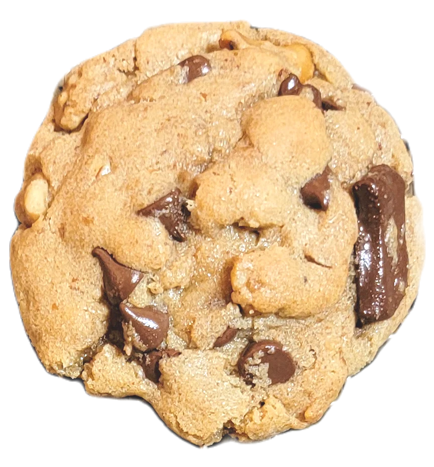

beshrijving
Costco's chocoladekoekje met dubbele stukjes zijn taai, chocoladeachtig en heerlijk – het is geen wonder dat ze favoriet zijn bij fans! Deze zelfgemaakte chocoladekoekjes zijn gemakkelijk te maken en zullen zeker een succes zijn!.
Ingrediënten
- Gezouten boter – Als je alleen ongezouten boter hebt, voeg dan een extra snufje zout toe aan het deeg.
- Bruine suiker – We gebruiken meer bruine suiker dan gegranuleerde suiker om deze koekjes lekker taai te houden.
- Kristalsuiker
- ei
- Glucosestroop – Er zit VEEL glucosestroop in dit recept om ze heerlijk taai te maken.
- Melasse – Door een klein beetje melasse toe te voegen, krijgen de koekjes een mooie kleur en extra smaak.
- Meel voor alle doeleinden
- zout
- Roze zout naar smaak
- Zuiveringszout – dit helpt de koekjes tijdens het bakken lichtjes te verspreiden en bruin te worden.
- 3 eetlepels geraffineerde olie
- 2 eetlepels honing
- Chocoladestukjes – Ik haal mijn chocoladestukjes bij Walmart omdat dit de enige lokale winkel voor mij is die ze verkoopt! Ik koop het merk Tollhouse en ze passen perfect bij de Costco-koekjesbrokken.
Instructies
- Begin met het voorverwarmen van uw oven tot 350 ° F
- Bereid een bakplaat voor door deze te bekleden met een siliconenmatje of een vel bakpapier en zet deze opzij. Voor deze cookies is dit belangrijk, omdat ze anders aan het bakplaat blijven plakken.
- Gebruik een keukenmixer of een elektrische handmixer en meng de boter, bruine suiker en kristalsuiker tot een lichte kleur en een luchtige textuur. (Ongeveer 2-3 minuten).
- Schraap de zijkanten van de kom schoon en voeg het ei, de glucosestroop en de melasse toe. Meng tot alles goed gemengd is.
- Voeg vervolgens de droge ingrediënten toe: bloem, zout en zuiveringszout. Meng tot er een plakkerig deeg ontstaat. Benadruk het plakkerige! Dit zal niet aanvoelen als je normale koekjesdeeg vanwege al die glucosestroop.
- Roer tot slot de chocoladestukjes erdoor tot ze volledig zijn opgenomen. Zorg ervoor dat u niet overmixt.
- Verdeel uw deeg in porties van 3 eetlepels met behulp van een koekjeslepel (#24) of uw handen. Vorm het deeg tot een bal en plaats deze op je bakplaat.
- Bak je koekjesdeeg op 350 ° F gedurende 9-11 minuten. Je weet dat de koekjes klaar zijn als ze beginnen uit te lopen en de randen goudbruin beginnen te worden.
- Laat de koekjes afkoelen op de pan voordat je ze op een rooster legt.
- Om de zachte rand te krijgen waar Costco-koekjes bekend om staan, bewaart u de koekjes een nacht in een luchtdichte verpakking. Deze wachtperiode zorgt ervoor dat de randen zachter worden. Als je niet kunt wachten en ze direct uit de oven moet eten, zullen de randen een beetje boterachtig en knapperig zijn.